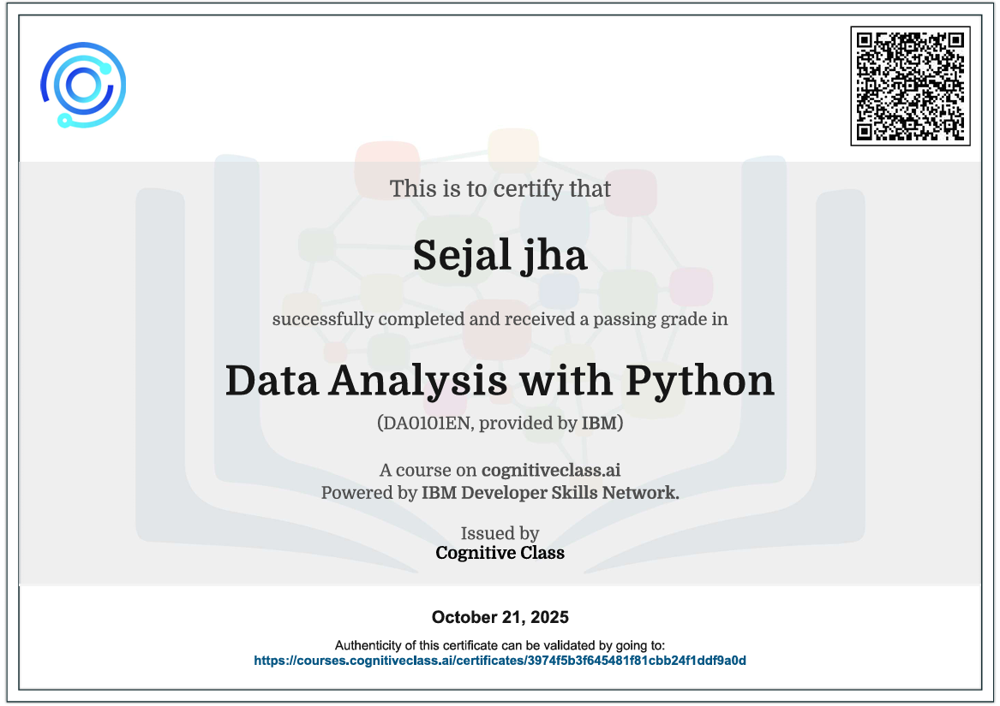
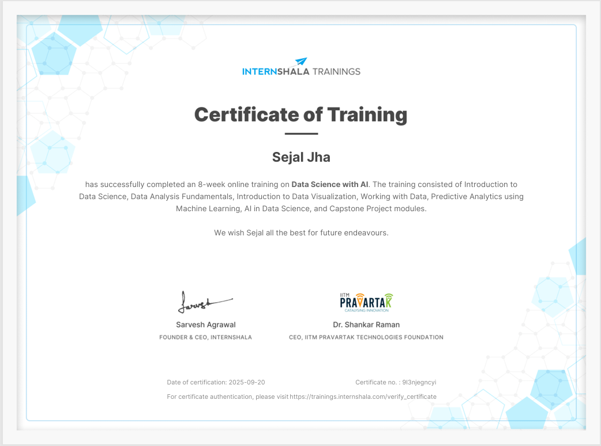
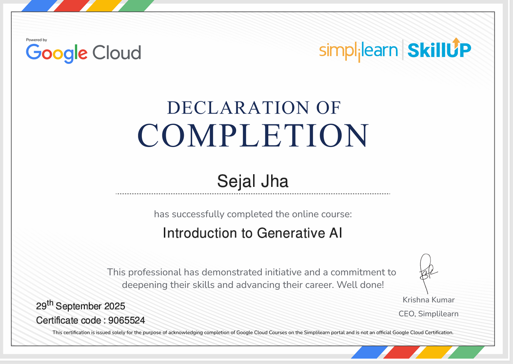

Data Analysis with Python
Learned to analyze, clean, and visualize data using Python libraries such as Pandas, NumPy, and Matplotlib.
AI-powered Streamlit application for CSV data cleaning, visualization, business insights, and AI-generated recommendations using Python and LLMs.
Automated the process of consolidating and cleaning sales data from multiple files to generate a structured, analysis-ready sales report using Python and Pandas.
Analyzed e-commerce data using advanced SQL queries, including joins, subqueries, CTEs, aggregate functions, and window functions to derive meaningful business insights.
Analyzed supply chain data to forecast product demand and optimize inventory levels using Python, machine learning, and data-driven insights.


Learned to analyze, clean, and visualize data using Python libraries such as Pandas, NumPy, and Matplotlib.

Gained practical knowledge of data analysis, machine learning, AI concepts, and predictive modeling using Python.

Learned dashboard creation, data visualization, and reporting techniques using Power BI.

Learned the fundamentals of Generative AI, LLMs, prompt engineering, and AI-powered applications.
Proficient in writing complex queries using joins, subqueries, CTEs, window functions, and aggregations for business analysis.
Skilled in data cleaning, analysis, visualization, and machine learning using Pandas, NumPy, Matplotlib, and Seaborn.
Experienced in data analysis using formulas, Pivot Tables, charts, and data cleaning techniques.
Capable of building interactive dashboards, creating visualizations, and analyzing KPIs for business insights.
Knowledge of classification models, feature engineering, and model evaluation for predictive analytics.
Familiar with version control, repository management, and project collaboration using Git and GitHub.